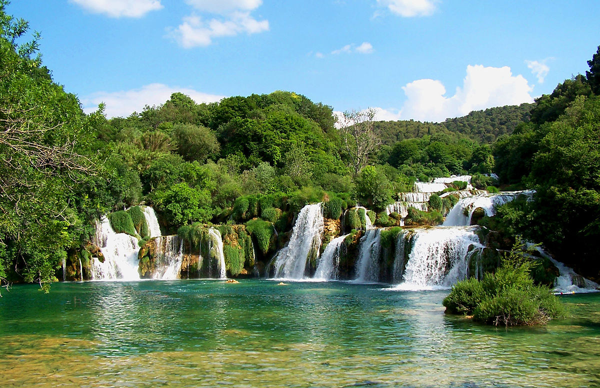
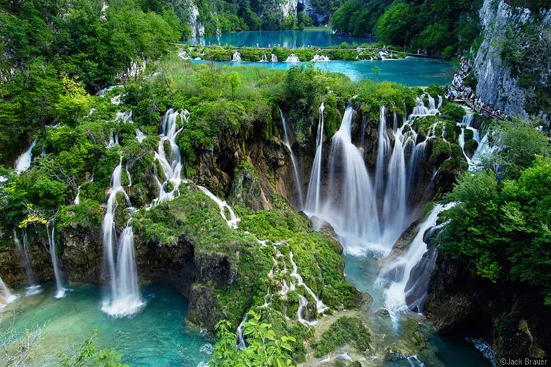
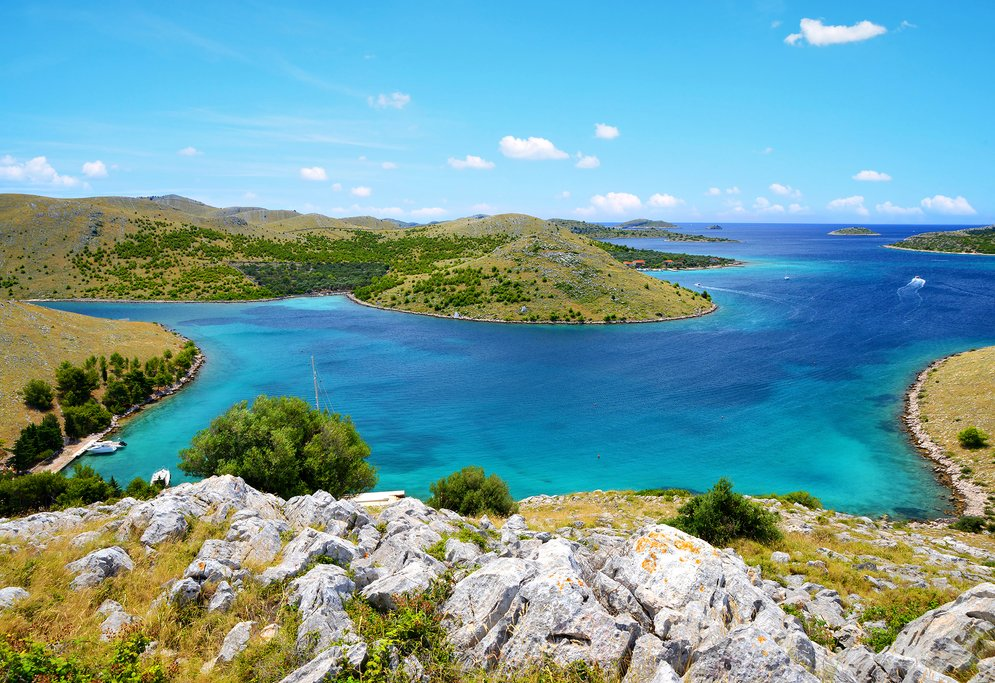
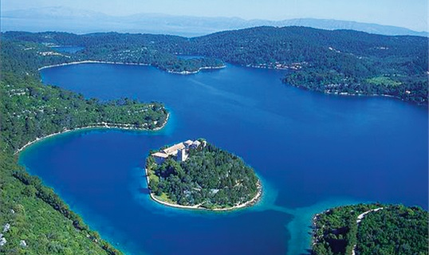
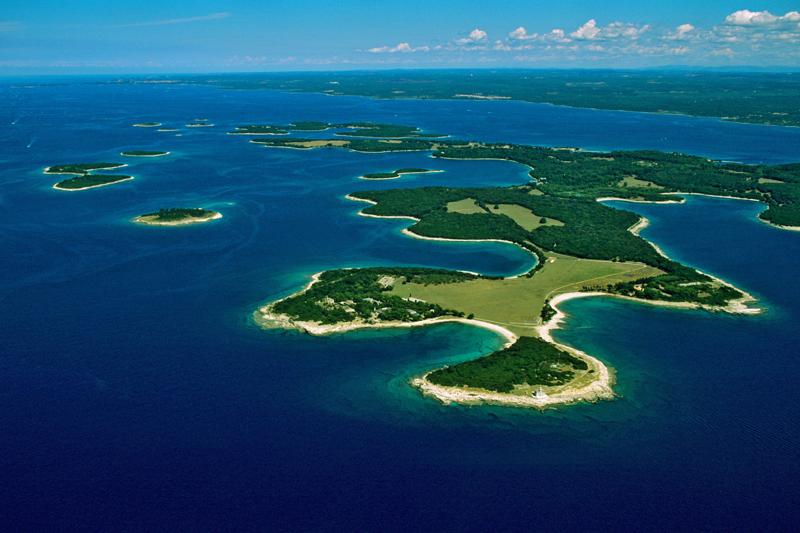
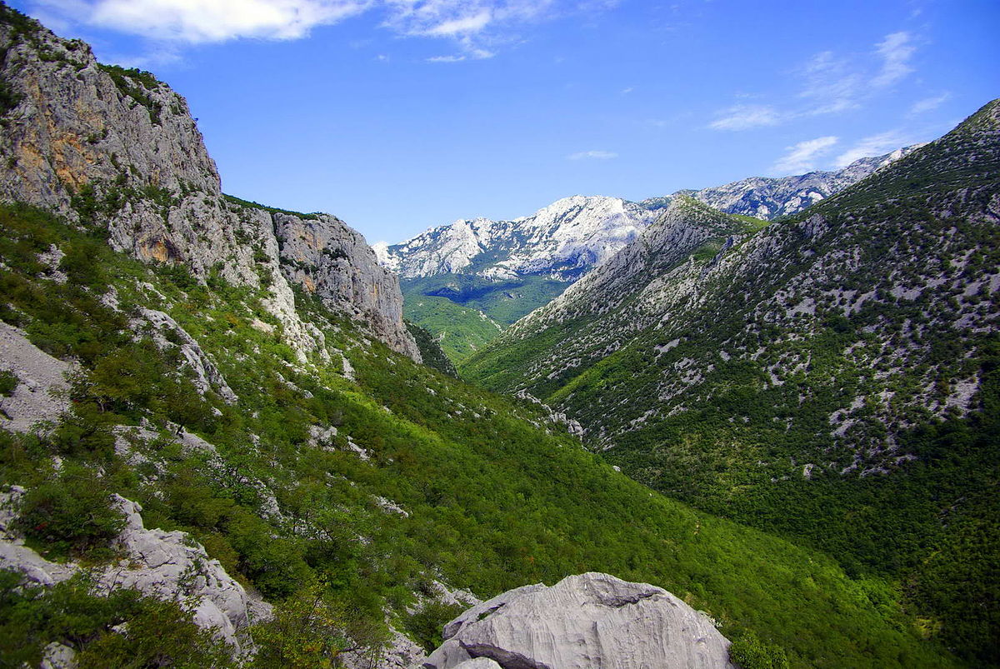
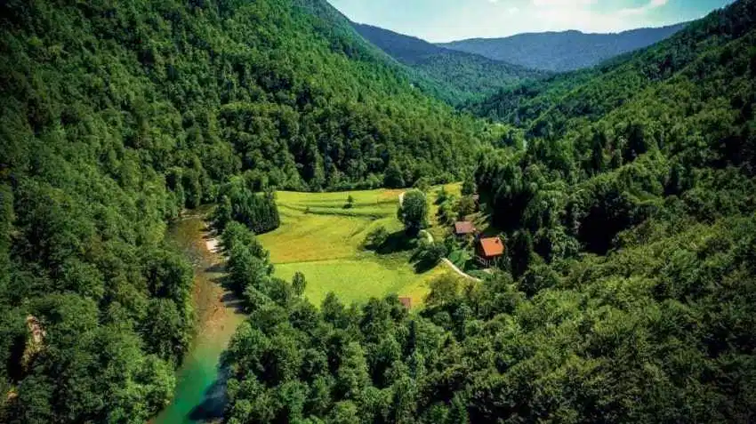
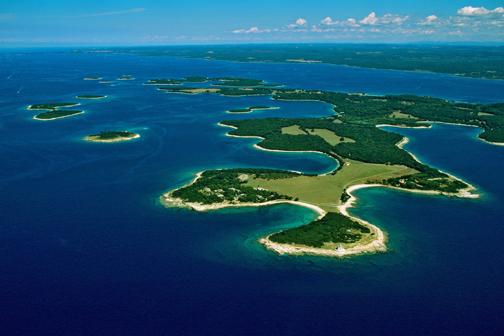
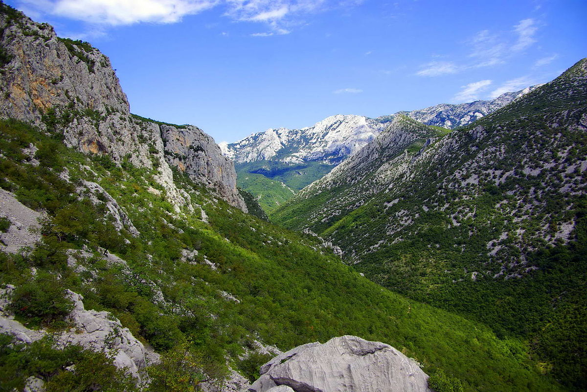
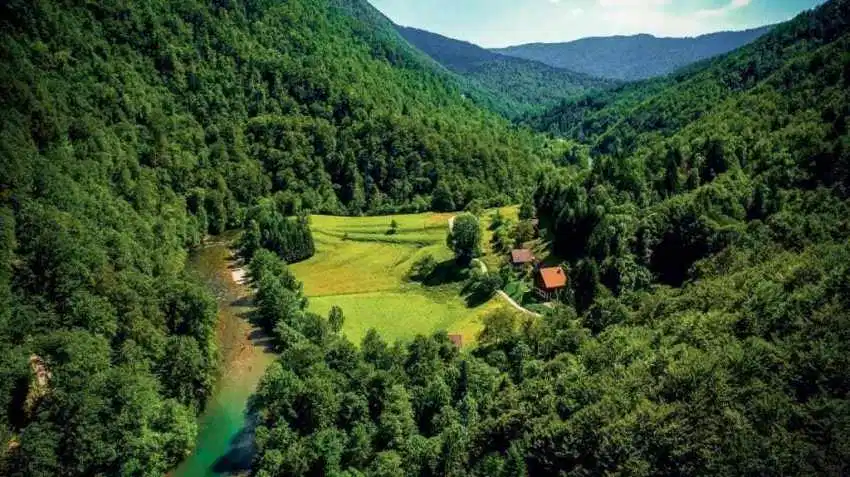

The 8 main National Parks of Croatia
    





Krka National Park
Although Plitvice gets all the attention for waterfalls, Krka is a must see if you're looking for amazing looking waterfalls. One thing that sets the two apart is the fact that you can efven swim in the waterfalls here at the Krka National Park! This park has great trails that help retell the area's history and shows you some of the wildlive that call Krka home. There's even a 14th century medieval fortress located on the Krka river or if the medieval isn't your style, there's also a Monastery on Visovac Island you can visit.
Plitvice Lakes National Park
Plitvice Lakes is one of the greatest tourist attractions in Croatia located between the mountains, Mala Kapela and Plješivica With 16 interconnected lakes, and waterfalls up to 78 meters or 85 yards tall, it's no wonder why this is a must see when visiting Croatia. Just know that it gets a little crowded in the middle of the day, so it's recommended to come early to enjoy this marvel in peace.
Kornati National Park
Kornati is an archipelago off the coast of Dalmatia. This one might prove a little difficult to reach, but the view from any one of the 89 islands will surely be worth it. There's a good mix of land and sea activities like hiking to the top of the Opat peaks on the main island or snorkeling off the beaches. As islands, they're ideal for swimming with sandy beaches and huge cliffs that are low enough to jump off!
Mljet National Park
Located in the southern parts of Croatia, Mljet is ideal for those with a sense of adventure. Bordered by saltwater lakes, Mljet is a great place for swimming, kayaking, and hiking. Just like any island, there are many myths and legends from Mljet, some based on greek mythology, some based on religious figures who know's what's true?
Sjeverni Velebit National Park
Now this National Park is one of the more mountainous areas in Croatia. The mountains of Velebit are home to two national parks, Sjeverni velebit and Paklenica. The star attraction of these mountains? It's of course the Velebit Botanical Garden! The garden lies near the Mountain lodge Zavižan, the oldest high altitude weather station in Croatia. This botanical reserve showcases the biodversity of the Velebit mountains with a whopping 300 plant species. Unlike many of the other national Parks here in Croatia, this one offers a stargazing program called Stars above Zavižan where you will be driven to the area and taken on a night walk with a guide for an hour of stargazing.
Brijuni National Park
Brijuni National Park is an archipelago of 14 islands, but most are off limits to tourists. The main island that welcomes visitors is Veliki Brijun, where over 200 dinosaur footprints were discovered. One of the main attractions here has turned into a safari park. In Brijun National Park, there are some other areas of interest like the sites of ancient Roman Villas or the 5th century St. Mary's Church.
Paklenica National Park
With 150 Kilometers or 93 miles of trails to explore, this national park is deticated to nature's more barren and subtle beauty. With pine forests, canyons, and a 175 meter long cave, Paklenica National Park attracts rock climbers, mountainers, and hikers to name a few. Thanks to the range of terrain, this park is home to more than 1,000 plant species, birds, and even brown bears.
Risnjak National Park
And Lastly, we have our least known national park in Croatia. Risnjak is one of the national parks where observation, and appreciation is the main focus. Best visited in the summer or winter, Risnjak is the place to watch for animals. There are also places to hike and rock climb and thanks to the mountains' barren look, the view is amazing. One activity that sets this apart from the others is fly fishing. Yes, there are restrictions on tackle and some fish species can only be taken during certain times, but you're able to grab a fishing ticket and spend all day catching fish along the Kupa River.